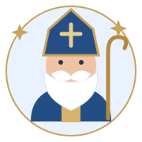

01 · Кібербезпека
Хто намагається обдурити Миколая?
Чотири наукові виклики. Чотири напрями. Твій вектор майбутнього.
Дата та час зустрічі будуть оголошені додатково.

Хто намагається обдурити Миколая?
Таємний код Миколая
Подарунок, якого не видно
Встигнути до світанку
Після проходження інтерактивів Ви зможете отримати персональний цифровий лист та рекомендації для подальших досліджень.
Завдання відкриються незабаром.